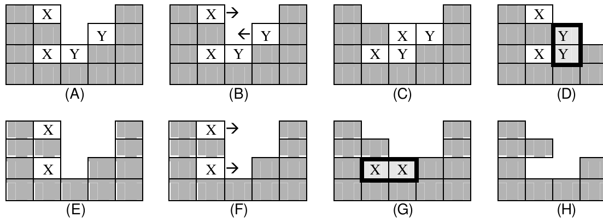
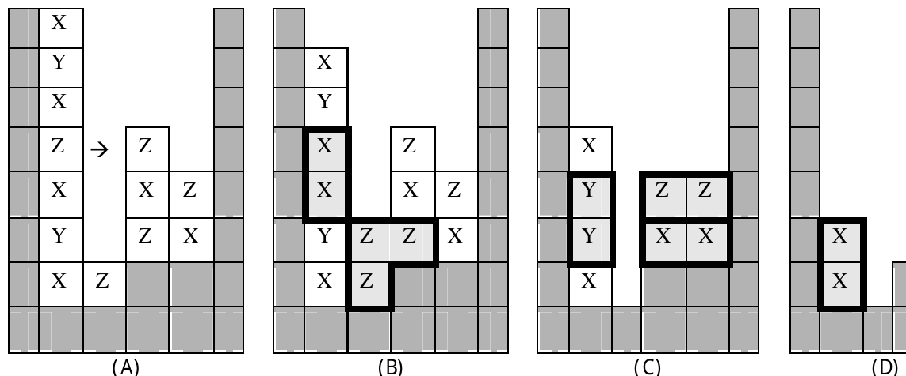

25th Annual ACM ICPC World Finals · Problem I
The game Vexed is a Tetris -like game created by James McCombe. The game consists of a board and blocks that are arranged in stacks. If the space to the immediate left or right of a block is open (that is, it contains no other block nor any part of the game board “wall”), then that block can be moved in that direction. Only blocks that are not part of the game board wall can be moved; “wall” blocks are stationary in all events. After a block is moved, if it or any other block no longer has anything under it, those blocks fall until they land on another block. After all blocks have landed, if any two or more identically-marked pieces are in contact horizontally and/or vertically, then those blocks are removed as a group. If multiple such groups result, then all groups are removed simultaneously. After all such groups are removed, all blocks again fall to resting positions (again, wall blocks do not move). This might then result in more groups being removed, more blocks falling, and so on, until a stable state is reached. The goal of the game is to remove all the movable blocks from the board.
Consider the simple example shown here. For reference purposes, number the rows of the board from top to bottom starting with an index value of zero, and number the columns from the left to right, also with a starting index value of zero. Board positions can be therefore be referenced as ordered (row, column) pairs. By additionally using an “L” or “R” to refer to a left or right push respectively, we can also use the ordered triple (row, column, direction) to indicate moves.

In (A) we have two choices for moves as shown in (B). These moves are (0,1,R) and (1,3,L) using the identification scheme defined above. Note that if we try (0,1,R), the resulting board state as shown in (C) is a dead end; no further moves are possible and blocks still remain on the board. If we choose the other move, however, the blocks at (1,2) and (2,2) are now in vertical contact, so they form a group that should be removed as shown by (D). The resulting board state is shown in (E), leaving the two moves shown by (F). Note that either move would eventually allow a solution, but (0,1,R) leads to a two move solution, whereas (2,1,R) leads to a three move solution. (G) and (H) show the final steps if we choose (0,1,R).
There are often many ways to solve a particular Vexed puzzle. For this problem, only solutions with a minimum number of moves are of interest. The minimum number of moves can sometimes be surprising. Consider another example.

In this example there are ten possible first moves, and there are in fact several ways to arrive at a solution. There is only one move in (A), however, that allows us to achieve a solution with the minimum number of moves. Observe the sequence of events shown if (3,1,R) is chosen as the first move.
The input will consist of several puzzles. Each begins with a line containing integers giving the number of rows (NR) and columns (NC) in the puzzle, and a string of characters (terminated by the end of line) giving the name of the puzzle; these items are separated by one or more spaces. This line is followed by an NR by NC array of characters defining the puzzle itself; an end of line will follow the last character in each row. NR and NC will each be no larger than 9. The “outer walls” (in addition to “inner wall” blocks) on the left, right, and bottom will always be included as part of the puzzle input, and are represented as hash mark (#) characters. Moveable blocks are represented by capital letters which indicate the marking on the block. To avoid possible ambiguities, open spaces in the puzzle are represented in the input by a hyphen (–) rather than by spaces. Other than the outer walls, wall blocks and moveable blocks may be arranged in any stable pattern. Every input puzzle is guaranteed to have a solution requiring 11 or fewer moves.
A puzzle with zero dimensions marks the end of the input and should not be processed.
For each input puzzle, display a minimum length solution formatted as shown in the sample output. In the event that there are multiple solutions of minimum length, display one of them.
4 5 SAMPLE-01 #A--# ##-B# #AB## ##### 6 7 SAMPLE-02 #--Y--# #-ZX-X# #-##-## #-XZ--# ####YZ# ####### 0 0 END
SAMPLE-01: Minimum solution length = 2 (B,1,3,L) (A,0,1,R) SAMPLE-02: Minimum solution length = 9 (Y,0,3,R) (Z,4,5,L) (X,1,3,R) (Z,1,2,R) (Z,1,3,R) (X,3,4,R) (X,3,2,R) (X,4,5,L) (X,1,5,L)